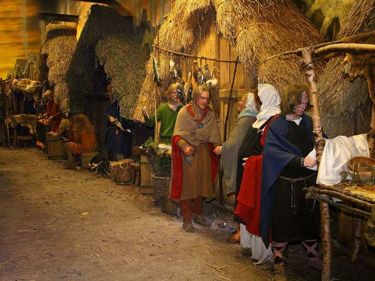

요르빅 바이킹 센터
요크에 뿌리내린 스칸디나비아 정착민들에 대해 배우면서 요르빅 바이킹 센터에 전시된 고대 노르웨이 유물을 살펴보고 재연 행사에 참여하며 바이킹 체험을 해 보세요.
요르빅 바이킹 센터는 입체 모형과 실물 크기의 모형을 통해 스칸디나비아 사람들이 살던 당시의 요크를 보여줍니다.
이 센터는 요크에서 바이킹들이 살던 흔적이 발견되면서 1980년대에 문을 열었습니다.
발굴터에서 실제 바이킹의 유물을 발굴하며 고고학자 체험을 하셔도 좋습니다.
아티팩트 갤러리에는 바이킹들이 사용하던 장신구와 도구가 전시되어 있습니다.
근처 명소인 페어팩스 하우스, 머천트 어드벤처러스 홀, 클리퍼즈 타워도 함께 방문하시면 좋습니다.